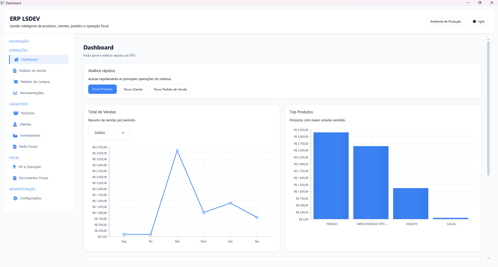
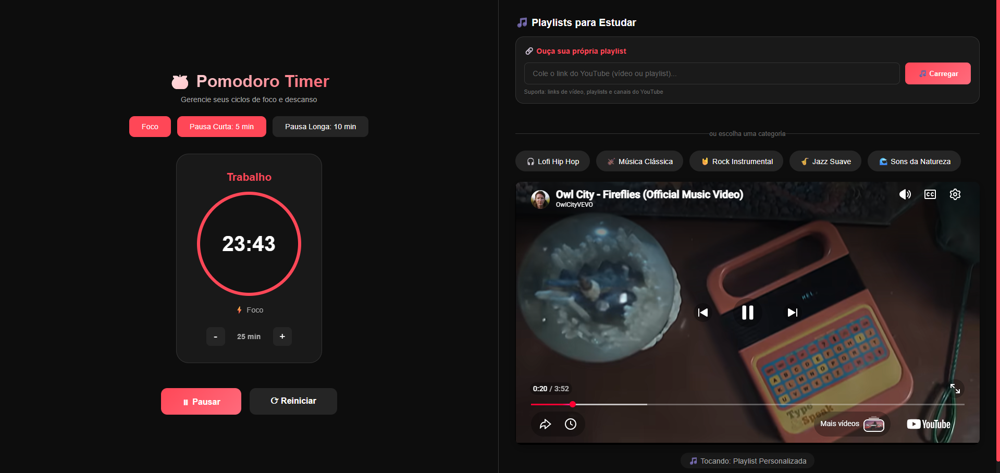
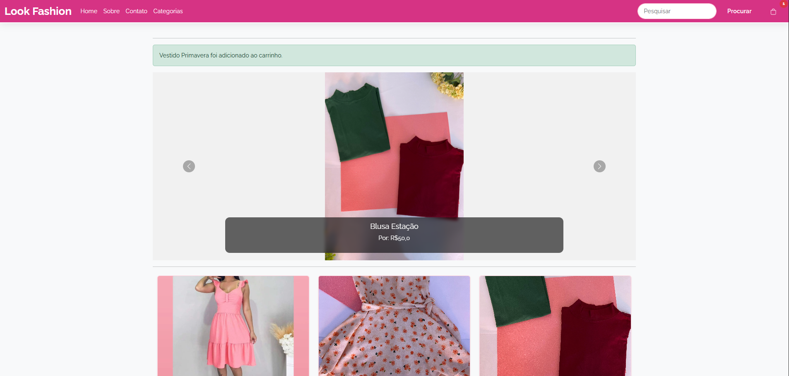
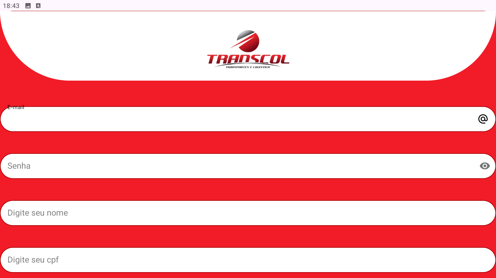

01
Back-end
Lógica, APIs e arquitetura de aplicações.
ENGENHARIA DE SOFTWARE · BACK-END
Sou Lucas — desenvolvedor back-end em formação. Transformo curiosidade por tecnologia em soluções claras para problemas reais.
A tecnologia é onde quero construir minha trajetória. Gosto de aprender na prática, entender como as coisas funcionam e criar software útil, claro e bem estruturado.
Atualmente curso Engenharia de Software e trabalho com suporte técnico. Essa combinação me ajuda a enxergar os problemas de quem usa a tecnologia e pensar em soluções com cuidado.
Busco minha próxima oportunidade como desenvolvedor estagiário ou júnior para contribuir com dedicação e continuar evoluindo junto com a equipe.
Conheça minha trajetóriaConhecimento construído com estudo, prática e projetos pessoais. Meu foco atual está no ecossistema Java e nos fundamentos de desenvolvimento back-end.
Lógica, APIs e arquitetura de aplicações.
Interfaces funcionais, responsivas e acessíveis.
Dados confiáveis e atenção ao que acontece em produção.
Cada experiência ampliou minha visão sobre como tecnologia e pessoas se encontram no dia a dia.
Wit Gestão · Uberlândia, MG
Atendimento e diagnóstico de problemas, orientação de usuários, testes para reprodução de bugs e registro de soluções. Atuação próxima às equipes de produto para encaminhar feedback e melhorar a experiência.
Bacharelado · Graduação em andamento
Estudos de desenvolvimento distribuído, redes de computadores, virtualização e sistemas escaláveis, combinados com projetos pessoais e aprendizado prático.
Transcol Transportes e Logística · Rio Verde, GO
Emissão e conferência de documentos fiscais eletrônicos, integração com sistemas TMS e ERPs e apoio aos processos operacionais e financeiros.
Projetos pessoais, problemas reais e muita vontade de aprender fazendo.

INTERFACE / 001ERP LSDEVPrévia do dashboard indisponívelSistema ERP desktop para gestão de produtos, dashboard e notas fiscais, desenvolvido com JavaFX e Spring Boot.

WEB APP / 002Um espaço de estudo com timer Pomodoro, playlists e interface adaptável para dispositivos móveis.
Visitar projeto
E-COMMERCE / 003Loja de moda feminina com catálogo, detalhes de produtos e fluxo de carrinho, criada com Django.

MOBILE APP / 004Aplicativo para registrar abastecimentos e acompanhar custos operacionais de forma simples.
A PRÓXIMA IDEIA PODE COMEÇAR AQUI
Aberto a oportunidades de estágio, posições júnior e conversas sobre tecnologia.
Diga olá